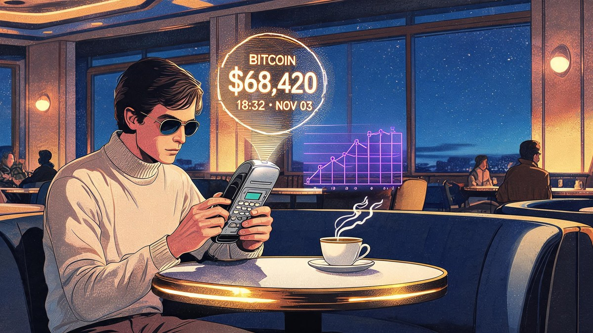
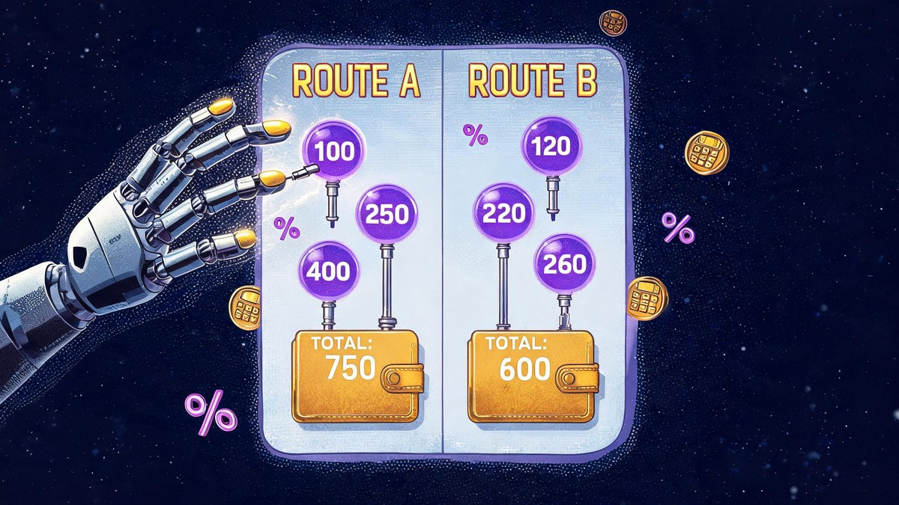
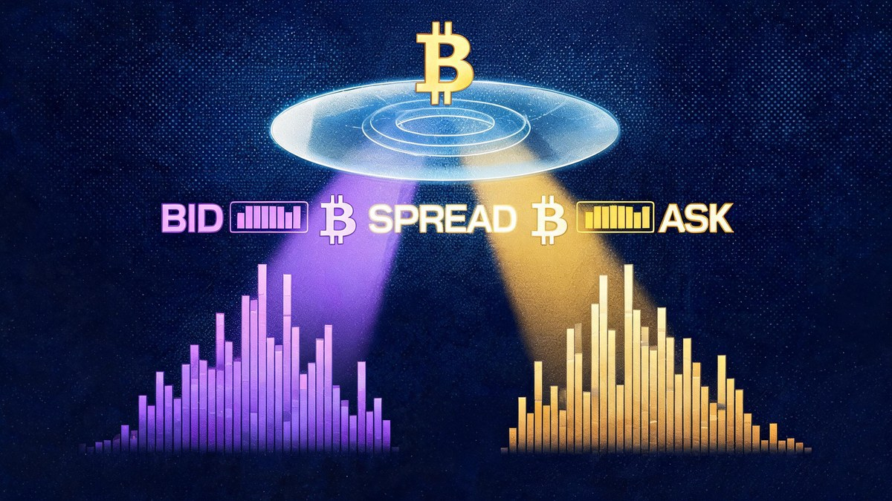
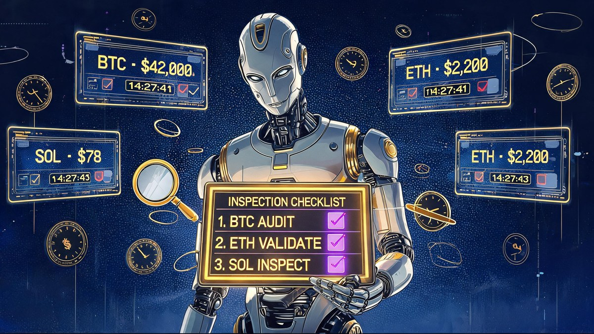

How to Choose a Crypto Price Tracker That Shows Real Trading Costs

Quick answer
A tracker’s displayed crypto price is a market reference, not your execution quote. To find what you will actually pay: define one exact transaction, calculate effective acquisition cost = total cash paid ÷ net units delivered, and test the tracker against an exchange order preview. The lower displayed price can still cost you more.
In this guide
- A displayed price is not an execution quote
- Compare each crypto price on the same basis
- Calculate the cost per unit you actually receive
- Worked example: the lower trading quote can cost more
- Check whether the quote can support your order size
- Choose features that match your actual workflow
- Account for decentralized trading and connection risks
- Run a short test before choosing
- Frequently asked questions
- Keep the market number separate from the final bill
A crypto price tracker can show Bitcoin rising while telling you very little about what you would actually pay to buy it. The displayed number may exclude the bid-ask spread, trading fees, payment charges and the cost of moving your purchase into a wallet.
The right tracker helps you distinguish a market reference from an executable quote. This guide explains which data to look for, how to calculate an all-in cost and how to test a tracker before relying on it. The focus is spot purchases and sales, not leveraged products with separate financing and liquidation risks.
Key Takeaways
- A displayed price (last trade, midpoint, aggregate) is a market reference — it does not tell you what your next order will cost.
- Compare trackers on the same basis: same asset, network, trading pair, order size, payment method and destination.
- The core formula: effective acquisition cost = total cash paid ÷ net asset units received at your chosen destination.
- The lower displayed quote can cost more once spreads, funding charges and withdrawal deductions are counted — Route B beats Route A in the worked example below.
- Order-book depth matters: the best ask may not cover a $5,000 order at the top-of-book price.
- Never grant a tracker withdrawal authority or a seed phrase — read-only means read-only.
A displayed price is not an execution quote
There is no single universal cryptocurrency price. Different venues have different buyers, sellers and order books. A tracker might display a recent trade on one exchange, an average across several markets or a calculated reference value.
Those figures answer different questions:
| Displayed figure | What it tells you | What it does not establish |
|---|---|---|
| Last traded price | Where a previous transaction occurred | What your next order will cost |
| Best bid | The highest currently displayed buying offer | Proceeds from selling a larger position |
| Best ask | The lowest currently displayed selling offer | Cost of buying beyond the available quantity |
| Midpoint | The average of the best bid and ask | A price at which you can necessarily trade |
| Aggregated reference | A benchmark calculated from selected markets | Your account-specific execution cost |
A credible provider explains its methodology. For example, CoinGecko publishes information about its pricing methodology. That transparency helps you interpret the number, but an aggregate still does not replace an exchange order preview.
Compare each crypto price on the same basis
Before comparing trackers, define the transaction you intend to make. Match the asset, market, order size, payment method and destination.
The same ticker is not enough. A native asset, a wrapped version and an unrelated token using a similar symbol are not interchangeable. Check the network and contract address where applicable. Also distinguish spot markets from perpetual futures, which have different pricing mechanics and costs.
The quote currency matters too. BTC/USD and BTC/USDT are different markets. A dollar-denominated stablecoin can trade away from its intended peg, while a local-currency display may simply convert another market using an exchange rate.
Finally, inspect timestamps. A page refreshing does not necessarily mean its underlying market data refreshed. Look for the exchange, trading pair and time associated with the quote itself.
A crypto price comparison becomes useful only when both numbers describe substantially the same transaction. If one tracker shows a global average and another shows a venue-specific ask, their disagreement is not automatically a data error.
Calculate the cost per unit you actually receive
For a purchase, the most practical comparison is:
Effective acquisition cost = total cash paid ÷ net asset units received at your chosen destination.
Define that destination first. Leaving assets on an exchange and withdrawing them to a personal wallet involve different costs. Neither is automatically the right choice, but the comparison must use the same endpoint.
Total cash paid can include the purchase amount, trading commission, payment charges and currency-conversion costs. Net units received should reflect any fees deducted in cryptocurrency.
Trading fees may depend on your account tier, recent volume and whether an order adds or removes liquidity. An exchange’s headline minimum rate may not apply to you. Kraken’s published fee schedule, for example, illustrates why the product and fee tier matter when checking costs.
Do not count the spread twice. If your estimate already uses an average execution price calculated from the asks you would buy, that price already reflects the spread and available liquidity. Adding another generic spread allowance would overstate the estimate.
A useful crypto price tracker either supports this calculation or makes clear which inputs you must obtain elsewhere. An unexplained “estimated fee” is not enough if you cannot tell whether it includes trading, funding or withdrawal charges.
Worked example: the lower trading quote can cost more
Consider two hypothetical routes for buying the same asset and withdrawing it to the same type of wallet. These are illustrative figures, not current prices or provider offers. Each route starts with a purchase of 10 gross units.
| Cost component | Route A | Route B |
|---|---|---|
| Displayed reference price | $100.00 | $100.00 |
| Average execution price | $100.20 | $100.40 |
| Cost of 10 units before fees | $1,002.00 | $1,004.00 |
| Trading fee paid in dollars | $3.00 | $1.00 |
| Funding charge | $2.00 | $0.00 |
| Total cash paid | $1,007.00 | $1,005.00 |
| Withdrawal fee deducted in asset units | 0.020 | 0.005 |
| Net units delivered | 9.980 | 9.995 |
| Effective cost per delivered unit | $100.90 | $100.55 |

Route A offers the better average trading price, yet Route B delivers a lower effective acquisition cost. Its smaller fees outweigh the difference in execution price.
The withdrawal fee here represents the full withdrawal deduction for each hypothetical route. There is no additional network charge in this example. Adding one would double-count that cost.
This is why a crypto price comparison should end with dollars per delivered unit, not the largest-looking discount. If your cash budget is fixed instead, compare the net units delivered for that same total budget. For sales, reverse the calculation: compare net cash received per unit relinquished.
Check whether the quote can support your order size
The best ask might cover only a small amount. A larger market order can consume several price levels, making its average execution price worse than the number at the top of the book.
Look for order-book depth or a size-aware estimate. A tracker that estimates a $100 purchase but cannot model your intended $5,000 order leaves an important gap. Reported daily volume alone does not establish how much liquidity is available near the current price.
Distinguish three measures: the spread is the gap between the best bid and ask; estimated price impact describes how your size affects the expected fill; execution slippage is the difference between the expected price and what actually happens.
A limit order controls the worst acceptable execution price but does not guarantee completion. A marketable limit order can still remove liquidity and incur a taker fee.
During sudden moves, even a reasonable estimate can expire quickly. Veritya Daily’s guide to investigating abrupt cryptocurrency price moves explains how to cross-check market conditions. Treat a tracker’s estimate as time-sensitive, not as a guaranteed offer.

Choose features that match your actual workflow
You do not need every available metric. You need enough information to connect the displayed market value to the transaction you expect to make.
Use these priorities when assessing a tracker:
- Data provenance: Named exchanges, identifiable trading pairs, visible timestamps and an explanation of aggregation.
- Execution context: Bid and ask data, order-book depth or an estimate that changes with order size.
- Personalized fee inputs: Your applicable fee tier, funding method and quote currency, rather than only a promotional minimum.
- Destination-aware costs: Withdrawal deductions and supported networks when comparing a wallet-delivery scenario.
- Clear uncertainty: Labels distinguishing indicative estimates, executable quotes and unavailable data.
A crypto price tracker does not have to execute trades to be useful. A transparent reference tool paired with a venue’s order preview can be more dependable than an all-in estimate built on hidden assumptions.
Keep market research separate from execution checking. The indicators discussed in Veritya Daily’s framework for analyzing cryptocurrency market trends can help evaluate conditions, but a trend signal does not establish your transaction cost.
A paid subscription is not proof of better pricing data either. Assess whether the additional features solve a problem you actually have, such as exporting records or monitoring several venues.
Account for decentralized trading and connection risks
If you use decentralized exchanges, an exchange-style commission field will not capture every cost. Depending on the route, examine liquidity-provider fees, price impact, network gas, aggregator charges and any required token approval transaction.
Some charges are already embedded in the quoted output. Others are paid separately in the network’s native asset. Ethereum’s explanation of gas describes why network execution creates a separate expense. Failed on-chain transactions can also consume gas, and cross-chain routes may introduce bridge charges and additional risks.
For a crypto price tracker that connects to your accounts, inspect permissions before connecting. A read-only tracking service should not require withdrawal authority. Do not provide a seed phrase or private key merely to view balances or quotes.
Public wallet addresses can reveal holdings and transaction history when linked to your identity. Check what the service stores, whether it shares data and how to revoke access. Tracking convenience does not justify unnecessary account permissions.
Run a short test before choosing
Use a small, repeatable comparison rather than judging a tracker by its interface. You can perform these checks without placing a trade.
- Define one scenario: Choose an asset, trading pair, purchase amount, payment method and destination that reflect your actual plans.
- Record the assumptions: Note the tracker’s source, timestamp, fee tier and whether its figure is a last trade, midpoint, bid, ask or size-adjusted estimate.
- Compare with an order preview: Open the relevant venue’s preview for the same transaction and record expected units, fees and total payment without submitting it.
- Change the size: Compare a smaller and larger order to see whether the estimated average price responds to available liquidity.
- Reconcile the difference: Check whether the gap comes from stale data, spreads, commissions, payment charges, currency conversion or withdrawal costs.

Save the observations if you are comparing several tools. A service that consistently explains its estimate is more useful than one that occasionally matches by accident.
Do not expect every difference to disappear. Prices move between observations, account-specific promotions may apply and an order preview can itself be indicative. The goal is to understand the discrepancy and recognize uncertainty, not to manufacture perfect agreement.
Choose the crypto price tracker that exposes those limitations clearly. Treat unexplained precision, missing timestamps and fee-free claims without a defined scope as reasons to investigate further.
Frequently asked questions
Can a free tracker be accurate enough?
Yes, for monitoring market direction and comparing reference values, provided its sources and methodology are clear. Whether it can estimate your trading costs depends on its execution data and fee inputs, not simply whether it charges a subscription.
Does zero-commission trading mean there are no costs?
No. A transaction can still involve a spread, payment charges, currency conversion or withdrawal deductions. Compare total cash paid with net units received instead of evaluating commission in isolation.
Why does a tracker disagree with my exchange?
Common explanations include different venues, trading pairs, timestamps and calculation methods. One may display a last trade while the other shows a buy quote. Check those details before concluding that either number is wrong.
Can a tracker guarantee what I will pay?
A reference crypto price cannot guarantee execution. Even an order estimate may change before submission. If a provider offers a firm quote, inspect its expiry, covered amount and included charges. A limit order sets an execution-price boundary but may remain unfilled.
Keep the market number separate from the final bill
Start with a transparent benchmark, verify your venue’s quote and calculate the cost at your intended destination. For independent market context alongside those checks, explore Veritya Daily’s reporting and free daily email briefing. This guide is educational, not financial advice.
📚 Sources & Citations (5)
- CoinGecko — CoinGecko pricing methodology (accessed Oct 2026)
- Kraken — Kraken fee schedule: product and tier-based trading fees (accessed Oct 2026)
- Ethereum Foundation — Ethereum gas: network execution costs (accessed Oct 2026)
- Veritya Daily — Why Crypto Prices Move Suddenly (And How to Investigate) (2026)
- Veritya Daily — How to Analyze Crypto Market Trends in 7 Steps (2026)